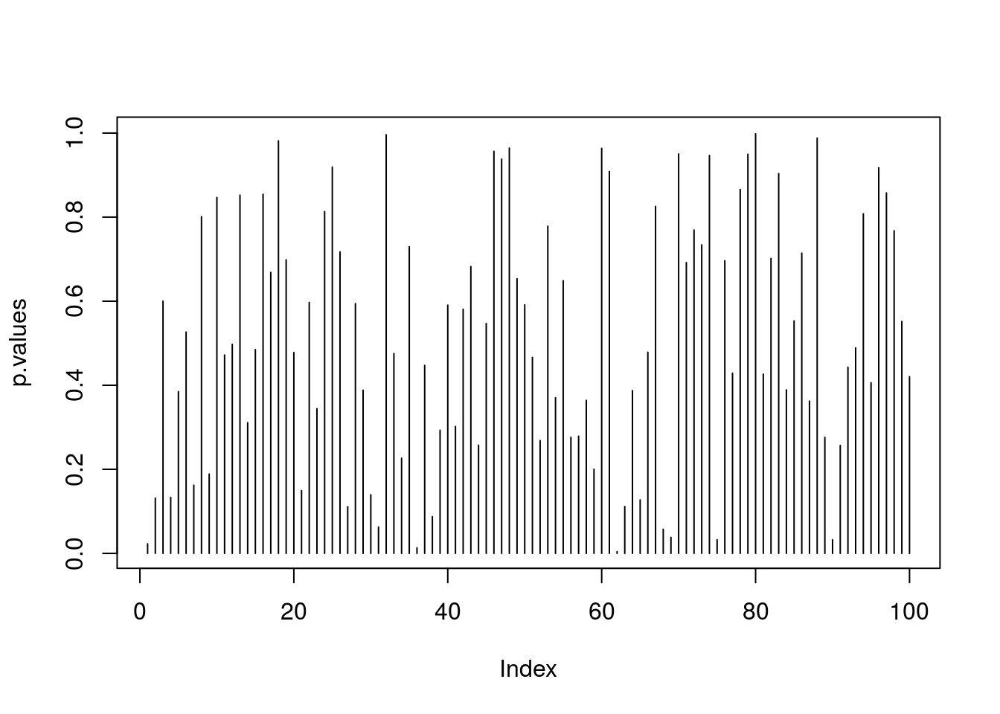
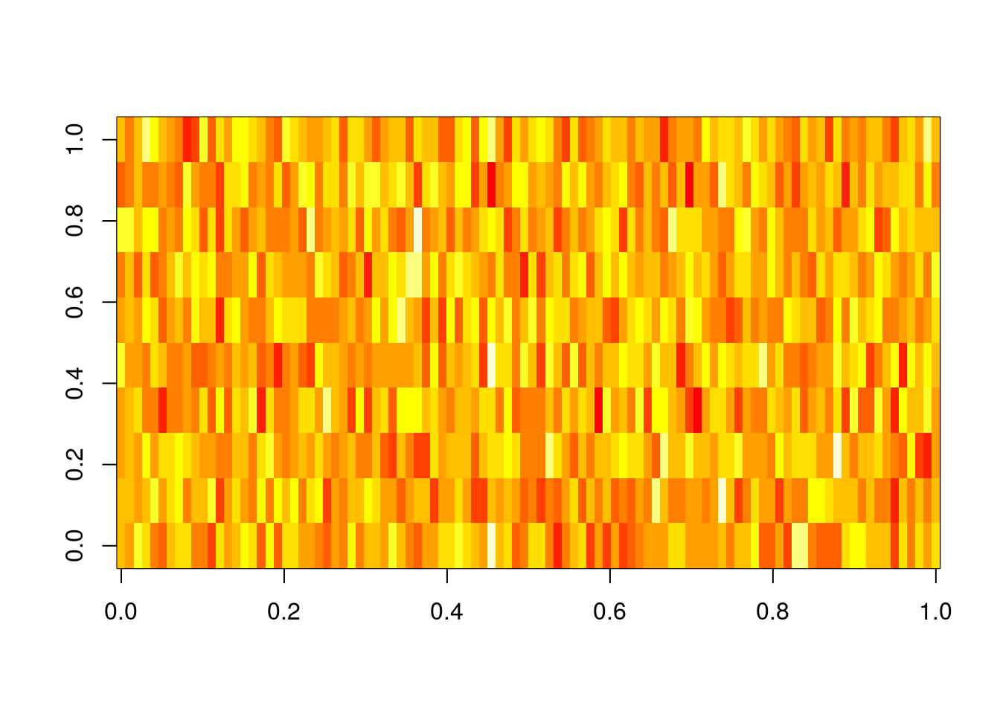
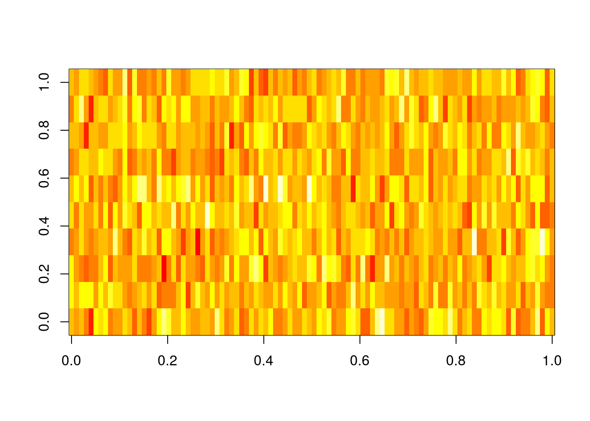
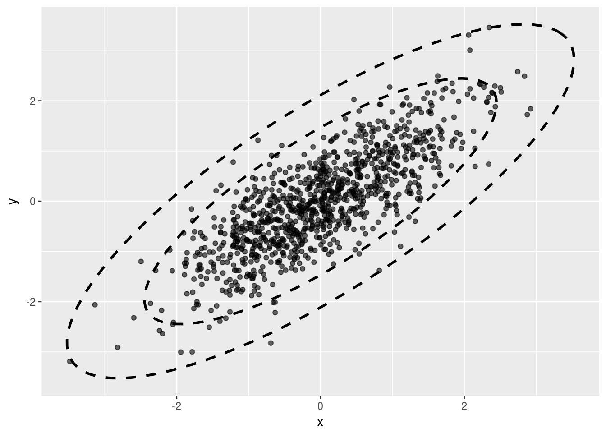
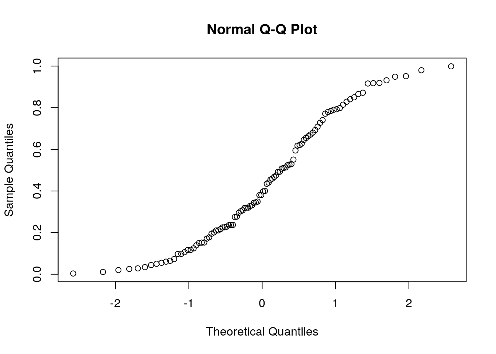
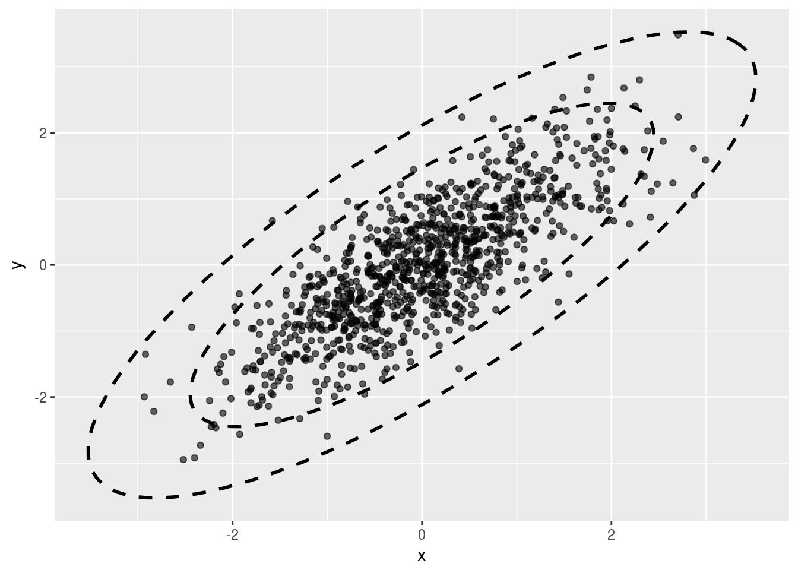

Chapter 7 Linear Mixed Models
The sources of variability, i.e. noise, are known in the statistical literature as “random effects”. Specifying these sources determines the correlation structure in our measurements. In the simplest linear models of Chapter 5, we thought of the variability as a measurement error, independent of anything else. This, however, is rarely the case when time or space are involved.
The variability in our data is rarely the object of interest. It is merely the source of uncertainty in our measurements. The effects we want to infer on are assumingly non-random, thus known as “fixed-effects”. A model which has several sources of variability, i.e. random-effects, and several deterministic effects to study, i.e. fixed-effects, is known as a “mixed effects” model. Here are some examples of such models.
Alternatively, we could treat the between-machine variability as another source of noise/uncertainty when inferring on the temporal fixed effect.
The unifying theme of the above examples, is that the variability in our data has several sources. Which are the sources of variability that need to concern us? This is a delicate matter which depends on your goals. As a rule of thumb, we will suggest the following view: If information of an effect will be available at the time of prediction, treat it as a fixed effect. If it is not, treat it as a random-effect.
Mixed models are so fundamental, that they have earned many names:
Mixed Effects: Because we may have both fixed effects we want to estimate and remove, and random effects which contribute to the variability to infer against.
Variance Components: Because as the examples show, variance has more than a single source (like in the Linear Models of Chapter 5).
Hirarchial Models: Because as Example 7.4 demonstrates, we can think of the sampling as hierarchical– first sample a subject, and then sample its response.
Multilevel Analysis: For the same reasons it is also known as Hierarchical Models.
Repeated Measures: Because we make several measurements from each unit, like in Example 7.4.
Longitudinal Data: Because we follow units over time, like in Example 7.4.
Panel Data: Is the term typically used in econometric for such longitudinal data.
MANOVA: Many of the problems that may be solved with a multivariate analysis of variance (MANOVA), may be solved with a mixed model for reasons we detail in 8.
Structured Prediction: In the machine learning literature, predicting outcomes with structure, such as correlated vectors, is known as Structured Learning. Because mixed-models merely specify correlations, using a mixed-model for making predictions may be thought of as an instance of structured prediction.
Whether we are aiming to infer on a generative model’s parameters, or to make predictions, there is no “right” nor “wrong” approach. Instead, there is always some implied measure of error, and an algorithm may be good, or bad, with respect to this measure (think of false and true positives, for instance). This is why we care about dependencies in the data: ignoring the dependence structure will probably yield inefficient algorithms. Put differently, if we ignore the statistical dependence in the data we will probably me making more errors than possible/optimal.
We now emphasize:
Like in previous chapters, by “model” we refer to the assumed generative distribution, i.e., the sampling distribution.
Mixed effect models are a way to infer against the right level of variability. Using a naive linear model (which assumes a single source of variability) instead of a mixed effects model, probably means your inference is overly anti-conservative. Put differently, the uncertainty in your estimates is higher than the linear model from Chapter 5 may suggest.
In a mixed effect model we will specify the dependence structure via the hierarchy in the sampling scheme (e.g. caps within machine, students within class, etc.). Not all dependency models can be specified in this way. Dependency structures that are not hierarchical include temporal dependencies (AR, ARIMA, ARCH and GARCH), spatial, Markov Chains, and more. To specify dependency structures that are no hierarchical, see Chapter 8 in (the excellent) Weiss (2005).
If you are using the model merely for predictions, and not for inference on the fixed effects or variance components, then stating the generative distribution may be be useful, but not necessarily. See the Supervised Learning Chapter 9 for more on prediction problems. Also recall that machine learning from non-independent observations (such as mixed models) is a delicate matter that is rarely treated in the literature.
7.1 Problem Setup
\[\begin{align} y|x,u = x'\beta + z'u + \varepsilon \tag{7.1} \end{align}\]where \(x\) are the factors with fixed effects, \(\beta\), which we may want to study. The factors \(z\), with effects \(u\), are the random effects which contribute to variability. In our repeated measures example (7.2) the treatment is a fixed effect, and the subject is a random effect. In our bottle-caps example (7.3) the time (before vs. after) is a fixed effect, and the machines may be either a fixed or a random effect (depending on the purpose of inference). In our diet example (7.4) the diet is the fixed effect and the family is a random effect.
Notice that we state \(y|x,z\) merely as a convenient way to do inference on \(y|x\), instead of directly specifying \(Var[y|x]\). This is exactly the power of mixed-effect models: we specify the covariance not via the matrix \(Var[y,z]\), but rather via the sampling hierarchy.
Given a sample of \(n\) observations \((y_i,x_i,z_i)\) from model (7.1), we will want to estimate \((\beta,u)\). Under some assumption on the distribution of \(\varepsilon\) and \(z\), we can use maximum likelihood (ML). In the context of mixed-models, however, ML is typically replaced with restricted maximum likelihood (ReML), because it returns unbiased estimates of \(Var[y|x]\) and ML does not.
7.1.1 Non-Linear Mixed Models
The idea of random-effects can also be implemented for non-linear mean models. Formally, this means that \(y|x,z=f(x,z,\varepsilon)\) for some non-linear \(f\). This is known as non-linead-mixed-models, which will not be discussed in this text.
7.1.2 Generalized Linear Mixed Models (GLMM)
You can marry the ideas of random effects, with non-linear link functions, and non-Gaussian distribution of the response. These are known as Generalized Linear Mixed Models. Wikidot has a nice comparison of several software suits for GLMMs.
7.2 Mixed Models with R
We will fit mixed models with the lmer function from the lme4 package, written by the mixed-models Guru Douglas Bates. We start with a small simulation demonstrating the importance of acknowledging your sources of variability. Our demonstration consists of fitting a linear model that assumes independence, when data is clearly dependent.
# Simulation parameters
n.groups <- 4 # number of groups
n.repeats <- 2 # sample per group
groups <- rep(1:n.groups, each=n.repeats) %>% as.factor
n <- length(groups)
z0 <- rnorm(n.groups,0,10) # generate group effects
(z <- z0[as.numeric(groups)]) # generate and inspect random group effects## [1] 6.960992 6.960992 2.380404 2.380404 -8.095683 -8.095683 -3.569163
## [8] -3.569163epsilon <- rnorm(n,0,1) # generate measurement error
# Generate data
beta0 <- 2 # set global mean
y <- beta0 + z + epsilon # generate synthetic sampleWe can now fit the linear and mixed models.
lm.5 <- lm(y~z) # fit a linear model assuming independence
library(lme4)
lme.5 <- lmer(y~1|groups) # fit a mixed-model that deals with the group dependenceThe summary of the linear model
summary.lm.5 <- summary(lm.5)
summary.lm.5##
## Call:
## lm(formula = y ~ z)
##
## Residuals:
## Min 1Q Median 3Q Max
## -1.2717 -0.4342 0.2110 0.4527 1.1885
##
## Coefficients:
## Estimate Std. Error t value Pr(>|t|)
## (Intercept) 2.24983 0.32663 6.888 0.000462 ***
## z 0.89810 0.05677 15.819 4.05e-06 ***
## ---
## Signif. codes: 0 '***' 0.001 '**' 0.01 '*' 0.05 '.' 0.1 ' ' 1
##
## Residual standard error: 0.9191 on 6 degrees of freedom
## Multiple R-squared: 0.9766, Adjusted R-squared: 0.9727
## F-statistic: 250.2 on 1 and 6 DF, p-value: 4.048e-06The summary of the mixed-model
summary.lme.5 <- summary(lme.5)
summary.lme.5## Linear mixed model fit by REML ['lmerMod']
## Formula: y ~ 1 | groups
##
## REML criterion at convergence: 34.3
##
## Scaled residuals:
## Min 1Q Median 3Q Max
## -1.04069 -0.57522 -0.03426 0.66816 0.91364
##
## Random effects:
## Groups Name Variance Std.Dev.
## groups (Intercept) 35.0431 5.9197
## Residual 0.8879 0.9423
## Number of obs: 8, groups: groups, 4
##
## Fixed effects:
## Estimate Std. Error t value
## (Intercept) 1.728 2.979 0.58Look at the standard error of the global mean, i.e., the intercept: for lm it is 0.326633, and for lme it is 2.9785508. Why this difference? Because lm treats the group effect15 as a fixed while the mixed model treats the group effect as a source of noise/uncertainty. Clearly, inference using lm underestimates our uncertainty in the estimated population mean (\(\beta_0\)).
Now let’s adopt the paired t-test view, which removes the group mean, so that it implicitly ignores the between-group variability. Which is the model compatible with this view?
diffs <- tapply(y, groups, diff)
diffs # Q:what is this estimating? A: epsilon+epsilon.## 1 2 3 4
## -1.5646333 1.0593082 1.7856037 0.5873133sd(diffs) # ## [1] 1.441244So we see that a paired t-test infers only against the within-group variability. Q:Is this a good think? A: depends…
7.2.1 A Single Random Effect
We will use the Dyestuff data from the lme4 package, which encodes the yield, in grams, of a coloring solution (dyestuff), produced in 6 batches using 5 different preparations.
data(Dyestuff, package='lme4')
attach(Dyestuff)
head(Dyestuff)## Batch Yield
## 1 A 1545
## 2 A 1440
## 3 A 1440
## 4 A 1520
## 5 A 1580
## 6 B 1540And visually
lattice::dotplot(Yield~Batch)
If we want to do inference on the (global) mean yield, we need to account for the two sources of variability: the within-batch variability, and the between-batch variability We thus fit a mixed model, with an intercept and random batch effect.
lme.1<- lmer( Yield ~ 1 | Batch , Dyestuff )
summary(lme.1)## Linear mixed model fit by REML ['lmerMod']
## Formula: Yield ~ 1 | Batch
## Data: Dyestuff
##
## REML criterion at convergence: 319.7
##
## Scaled residuals:
## Min 1Q Median 3Q Max
## -1.4117 -0.7634 0.1418 0.7792 1.8296
##
## Random effects:
## Groups Name Variance Std.Dev.
## Batch (Intercept) 1764 42.00
## Residual 2451 49.51
## Number of obs: 30, groups: Batch, 6
##
## Fixed effects:
## Estimate Std. Error t value
## (Intercept) 1527.50 19.38 78.8Things to note:
- The syntax
Yield ~ 1 | Batchtells R to fit a model with a global intercept (1) and a random Batch effect (|Batch). More on that later. - As usual,
summaryis content aware and has a different behavior forlmeclass objects. - The output distinguishes between random effects (\(u\)), a source of variability, and fixed effect (\(\beta\)), which we want to study. The mean of the random effect is not reported because it is unassumingly 0.
- Were we not interested in the variance components, and only in the coefficients or predictions, an (almost) equivalent
lmformulation islm(Yield ~ Batch).
Some utility functions let us query the lme object. The function coef will work, but will return a cumbersome output. Better use fixef to extract the fixed effects, and ranef to extract the random effects. The model matrix (of the fixed effects alone), can be extracted with model.matrix, and predictions made with predict. Note, however, that predictions with mixed-effect models are better treated as prediction problems as in the Supervised Learning Chapter 9, but are a very delicate matter.
detach(Dyestuff)7.2.2 Multiple Random Effects
Let’s make things more interesting by allowing more than one random effect. One-way ANOVA can be thought of as the fixed-effects counterpart of the single random effect.
In the Penicillin data, we measured the diameter of spread of an organism, along the plate used (a to x), and penicillin type (A to F). We will now try to infer on the diameter of typical organism, and compute its variability over plates and Penicillin types.
head(Penicillin)## diameter plate sample
## 1 27 a A
## 2 23 a B
## 3 26 a C
## 4 23 a D
## 5 23 a E
## 6 21 a FOne sample per combination:
attach(Penicillin)
table(sample, plate) # how many observations per plate & type?## plate
## sample a b c d e f g h i j k l m n o p q r s t u v w x
## A 1 1 1 1 1 1 1 1 1 1 1 1 1 1 1 1 1 1 1 1 1 1 1 1
## B 1 1 1 1 1 1 1 1 1 1 1 1 1 1 1 1 1 1 1 1 1 1 1 1
## C 1 1 1 1 1 1 1 1 1 1 1 1 1 1 1 1 1 1 1 1 1 1 1 1
## D 1 1 1 1 1 1 1 1 1 1 1 1 1 1 1 1 1 1 1 1 1 1 1 1
## E 1 1 1 1 1 1 1 1 1 1 1 1 1 1 1 1 1 1 1 1 1 1 1 1
## F 1 1 1 1 1 1 1 1 1 1 1 1 1 1 1 1 1 1 1 1 1 1 1 1And visually:

Let’s fit a mixed-effects model with a random plate effect, and a random sample effect:
lme.2 <- lmer ( diameter ~ 1 + (1|plate )+(1|sample) , Penicillin )
fixef(lme.2) # Fixed effects## (Intercept)
## 22.97222ranef(lme.2) # Random effects## $plate
## (Intercept)
## a 0.80454704
## b 0.80454704
## c 0.18167191
## d 0.33739069
## e 0.02595313
## f -0.44120322
## g -1.37551591
## h 0.80454704
## i -0.75264078
## j -0.75264078
## k 0.96026582
## l 0.49310948
## m 1.42742217
## n 0.49310948
## o 0.96026582
## p 0.02595313
## q -0.28548443
## r -0.28548443
## s -1.37551591
## t 0.96026582
## u -0.90835956
## v -0.28548443
## w -0.59692200
## x -1.21979713
##
## $sample
## (Intercept)
## A 2.18705797
## B -1.01047615
## C 1.93789946
## D -0.09689497
## E -0.01384214
## F -3.00374417Things to note:
- The syntax
1+ (1| plate ) + (1| sample )fits a global intercept (mean), a random plate effect, and a random sample effect. - Were we not interested in the variance components, an (almost) equivalent
lmformulation islm(diameter ~ plate + sample). - The output of
ranefis somewhat controversial. Think about it: Why would we want to plot the estimates of a random variable?
Since we have two random effects, we may compute the variability of the global mean (the only fixed effect) as we did before. Perhaps more interestingly, we can compute the variability in the response, for a particular plate or sample type.
random.effect.lme2 <- ranef(lme.2, condVar = TRUE)
qrr2 <- lattice::dotplot(random.effect.lme2, strip = FALSE)Variability in response for each plate, over various sample types:
print(qrr2[[1]]) 
Variability in response for each sample type, over the various plates:
print(qrr2[[2]]) 
Things to note:
- The
condVarargument of theraneffunction tells R to compute the variability in response conditional on each random effect at a time. - The
dotplotfunction, from the lattice package, is only there for the fancy plotting.
We used the penicillin exampe to demonstrate the incoporation of two random-effects. We could have, however, compared between penicillin types. For this matter, penicillin types are fixed effects to infer on, and not part of the uncertainty in the mean diameter. The appropriate model is the following:
lme.2.2 <- lmer( diameter ~ 1 + sample + (1|plate) , Penicillin )I may now ask myself: does the sample, i.e. penicillin, have any effect? This is what the ANOVA table typically gives us. The next table can be thought of as a “repeated measures ANOVA”:
anova(lme.2.2)## Analysis of Variance Table
## Df Sum Sq Mean Sq F value
## sample 5 449.22 89.844 297.09Uhh! No p-values. Why is this? Because Doug Bates, the author of lme4 makes a strong argument against current methods of computing p-values in mixed models. If you insist on an p-value, you may recur to other packages that provide that, at your own caution:
car::Anova(lme.2.2) ## Analysis of Deviance Table (Type II Wald chisquare tests)
##
## Response: diameter
## Chisq Df Pr(>Chisq)
## sample 1485.4 5 < 2.2e-16 ***
## ---
## Signif. codes: 0 '***' 0.001 '**' 0.01 '*' 0.05 '.' 0.1 ' ' 1… and yes; the penicillin type has a significant effect on the diamter.
7.2.3 A Full Mixed-Model
In the sleepstudy data, we recorded the reaction times to a series of tests (Reaction), after various subject (Subject) underwent various amounts of sleep deprivation (Day).

We now want to estimate the (fixed) effect of the days of sleep deprivation on response time, while allowing each subject to have his/hers own effect. Put differently, we want to estimate a random slope for the effect of day. The fixed Days effect can be thought of as the average slope over subjects.
lme.3 <- lmer ( Reaction ~ Days + ( Days | Subject ) , data= sleepstudy )Things to note:
~Daysspecifies the fixed effect.- We used the
Days|Subectsyntax to tell R we want to fit the model~Dayswithin each subject. - Were we fitting the model for purposes of prediction only, an (almost) equivalent
lmformulation islm(Reaction~Days*Subject).
The fixed day effect is:
fixef(lme.3)## (Intercept) Days
## 251.40510 10.46729The variability in the average response (intercept) and day effect is
ranef(lme.3)## $Subject
## (Intercept) Days
## 308 2.2585654 9.1989719
## 309 -40.3985770 -8.6197032
## 310 -38.9602459 -5.4488799
## 330 23.6904985 -4.8143313
## 331 22.2602027 -3.0698946
## 332 9.0395259 -0.2721707
## 333 16.8404312 -0.2236244
## 334 -7.2325792 1.0745761
## 335 -0.3336959 -10.7521591
## 337 34.8903509 8.6282839
## 349 -25.2101104 1.1734143
## 350 -13.0699567 6.6142050
## 351 4.5778352 -3.0152572
## 352 20.8635925 3.5360133
## 369 3.2754530 0.8722166
## 370 -25.6128694 4.8224646
## 371 0.8070397 -0.9881551
## 372 12.3145394 1.2840297Did we really need the whole lme machinery to fit a within-subject linear regression and then average over subjects? The answer is yes. The assumptions on the distribution of random effect, namely, that they are normally distributed, allows us to pool information from one subject to another. In the words of John Tukey: “we borrow strength over subjects”. Is this a good thing? If the normality assumption is true, it certainly is. If, on the other hand, you have a lot of samples per subject, and you don’t need to “borrow strength” from one subject to another, you can simply fit within-subject linear models without the mixed-models machinery.
To demonstrate the “strength borrowing”, here is a comparison of the lme, versus the effects of fitting a linear model to each subject separately.

Here is a comparison of the random-day effect from lme versus a subject-wise linear model. They are not the same.

detach(Penicillin)7.3 Serial Correlations
TODO: nlme package.
7.4 Relation to MANOVA
Multivariate analysis of variance (MANOVA) deals with the estimation of effect on vector valued outcomes. Put differently: in ANOVA the response, \(y\), is univariate. In MANOVA, the outcome is multivariate. MANOVA is useful when there are correlations among the entries of \(y\). Otherwise- one may simply solve many ANOVA problems, instead of a single MANOVA.
Now assume that the outcome of a MANOVA is measurements of an individual at several time periods. The measurements are clearly correlated, so that MANOVA may be useful. But one may also treat the subject as a random effect, with a univariate response. We thus see that this seemingly MANOVA problem can be solved with the mixed models framework.
What MANOVA problems cannot be solved with mixed models? There may be cases where the covariance of the multivariate outcome, \(y\), is very complicated. If the covariance in \(y\) may not be stated using a combination of random and fixed effects, then the covariance has to be stated explicitly in the MANOVA framework. It is also possible to consider mixed-models with multivariate outcomes, i.e., a mixed MANOVA, or hirarchial MANOVA. The R functions we present herein permit this.
7.4.0.1 MANOVA in R
[TODO: nlme:::lme()]
7.5 The Variance-Components View
TODO
7.6 Bibliographic Notes
Most of the examples in this chapter are from the documentation of the lme4 package (Bates et al. 2015). For a general and very applied treatment, see Pinero and Bates (2000). As usual, a hands on view can be found in Venables and Ripley (2013), and also in an excellent blog post by Kristoffer Magnusson For a more theoretical view see Weiss (2005) or Searle, Casella, and McCulloch (2009). Sometimes it is unclear if an effect is random or fixed; on the difference between the two types of inference see Rosset and Tibshirani (2018) and references therein. For more on predictions in linear mixed models see Robinson (1991), Rabinowicz and Rosset (2018), and references therein.
7.7 Practice Yourself
Computing the variance of the sample mean given dependent correlations. How does it depend on the covariance between observations? When is the sample most informative on the population mean?
- Return to the
Penicillindata set. Instead of fitting an LME model, fit an LM model withlm. I.e., treat all random effects as fixed.- Compare the effect estimates.
- Compare the standard errors.
- Compare the predictions of the two models.
- [Very Advanced!] Return to the
Penicillindata and use theglsfunction to fit a generalized linear model, equivalent to the LME model in our text. - Read about the “oats” dataset using
? MASS::oats.Inspect the dependency of the yield (Y) in the Varieties (V) and the Nitrogen treatment (N).- Fit a linear model, does the effect of the treatment significant? The interaction between the Varieties and Nitrogen is significant?
- An expert told you that could be a variance between the different blocks (B) which can bias the analysis. fit a LMM for the data.
- Do you think the blocks should be taken into account as “random effect” or “fixed effect”?
References
Weiss, Robert E. 2005. Modeling Longitudinal Data. Springer Science & Business Media.
Bates, Douglas, Martin Mächler, Ben Bolker, and Steve Walker. 2015. “Fitting Linear Mixed-Effects Models Using lme4.” Journal of Statistical Software 67 (1): 1–48. doi:10.18637/jss.v067.i01.
Pinero, Jose, and Douglas Bates. 2000. “Mixed-Effects Models in S and S-Plus (Statistics and Computing).” Springer, New York.
Venables, William N, and Brian D Ripley. 2013. Modern Applied Statistics with S-Plus. Springer Science & Business Media.
Searle, Shayle R, George Casella, and Charles E McCulloch. 2009. Variance Components. Vol. 391. John Wiley & Sons.
Rosset, Saharon, and Ryan J Tibshirani. 2018. “From Fixed-X to Random-X Regression: Bias-Variance Decompositions, Covariance Penalties, and Prediction Error Estimation.” Journal of the American Statistical Association, no. just-accepted. Taylor & Francis.
Robinson, George K. 1991. “That Blup Is a Good Thing: The Estimation of Random Effects.” Statistical Science. JSTOR, 15–32.
Rabinowicz, Assaf, and Saharon Rosset. 2018. “Assessing Prediction Error at Interpolation and Extrapolation Points.” arXiv Preprint arXiv:1802.00996.
A.k.a. the cluster effect.↩